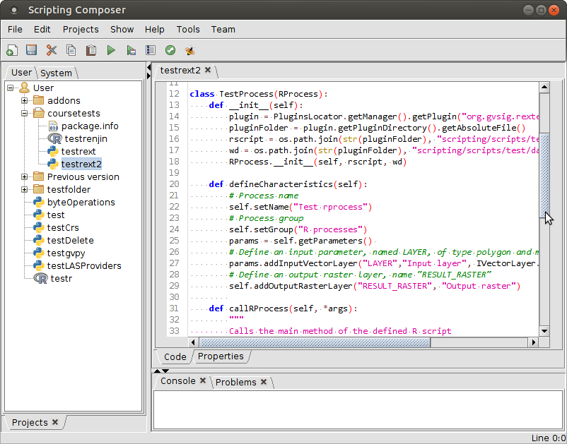

R from gvSIG perspective
An introduction to gvSIG geoprocessing
Geostat course, Albacete 2016
Cesar Martinez Izquierdo - www.scolab.es
Contents
- Workshop goals
- Software installation
- Introduction to gvSIG
- Interacting with R
- Exercises
Workshop goals
- Get an overview of gvSIG, a full featured desktop GIS software
- Learning about how to use R from gvSIG
- Demonstrate gvSIG geoprocessing and visualization capabilities, using a case study
Software installation
The following software is required for the course:
- gvSIG 2.3.0 rc4 (or later)
- gvSIG-Rexternal (gvSIG plugin)
- R statistical software
Press Down key for details
gvSIG 2.3.0 rc4 (or later)
- Get the software from the Development versions download section at gvsig.com
- The installable version is recommended
- But you can also use the portable version (no installation required)
R statistical software
Download and install from CRAN
gvSIG-Rexternal (gvSIG plugin)
- Download from the plugin Github repo. You need this .gvspkg file
- Install using gvSIG Add-ons manager (Menu: Tools -> Add-ons manager)
- Choose Installation from file to install the downloaded .gvspkg file
- Select Rexternal from the list of available plugins
- Note that you may need to execute gvSIG as Administrator in order to install plugins in Windows
gvSIG-Rexternal (II)
Test that RExternal is correctly installed by launching RShell using the gvSIG Scripting launcher
gvSIG-Rexternal (III)
It should open a new R console

Check the next slide if you find any problem
gvSIG-Rexternal (IV)
- RExternal tries to guess the R installation folder, but you may need to manually configure it
- If needed, edit the file
gvSIG/extensiones/org.gvsig.rexternal.app.mainplugin/rpath.propertieswithin your gvSIG installation folder - You need to write the full path to the R executable, as shown in the examples
# File: gvSIG/extensiones/org.gvsig.rexternal.app.mainplugin/rpath.properties
# keep this empty to search R binary in current PATH
R_BIN_PATH=
## You can manually set the path to the R binary. Examples:
#
# Typical path for Linux:
# R_BIN_PATH=/usr/bin/R
# Typical path for Windows 64 bits:
# R_BIN_PATH=c:\\Program Files\\R\\R-3.2.3\\bin\\x64\\R.exe
# Typical path for Windows 32 bits:
# R_BIN_PATH=c:\\Program Files\\R\\R-3.2.3\\bin\\x32\\R.exe
## Note that in Windows, the path to R will likely change when
## you update R to a newer version!!!!!
## You can also use an internally-installed R instance
# R_BIN_PATH=R/bin/R
Install extra symbol libraries (gvSIG plugins)
- Install using gvSIG Add-ons manager (Menu: Tools -> Add-ons manager)
- Choose Standard installation
- Install all the available symbol libraries
- Note that you may need to execute gvSIG as Administrator in order to install plugins in Windows
R packages
Install the following R packages: rgdal, sp and raster.
Type in R console:
install.packages("sp")
install.packages("raster")
install.packages("rgdal")
Introduction to gvSIG
- Overview
- Vector layers
- Raster layers
- Remote services
- 3D views
- Geoprocessing
- Scripting
Overview
- gvSIG is a desktop geographic information system (GIS) application
- Available for Linux, Windows and Mac
- Translated to 18 languages
- Long history: first version released on 2004
- GPL3 license
Overview (II)
- Vector and raster data support
- Support for data bases, remote services (OGC's WMS, WMTS, WFS, WCS, etc) and other tile providers (OSM/Map Quest, Google, etc)
- Vector editing capabilities
- 3D visualization
- Map composer
Overview (III)
- Geoprocessing tools and process modeller
- Easily extensible using the integrated scripting framework and the Add-on manager
- Different scripting languages supported (Python/Jython, Groovy, R/Renjin, Javascript and Scala)
gvSIG documents
gvSIG documents
- Views: data visualization, processing and editing
- Table: alphanumeric information visualization/editing
- Map: map composition, printing and high quality exporting
- Charts: create simple charts
Views: Add layer
Vector data
- Advanced symbology and labelling
- Lots of formats supported: SHP, PostGIS, DXF, DGN, GML, KML, LAS (LIDAR), CSV and Excel points...
- Plus all the formats supported by OGR
Add layer: files
Symbol library
Symbol library
Raster data
- Advanced symbology and labelling
- Lots of formats supported: SHP, PostGIS, DXF, DGN, GML, KML, LAS (LIDAR), CSV and Excel points...
- Plus all the formats supported by OGR
WMTS layers
3D views
- Creates 3D views from 2D views (layers, symbology, etc)
- Viewport and layer synchronization between views
- Spheric and flat modes
- Anaglyph mode
3D views: LIDAR data
3D views: vector extrusion
Geoprocessing
Geprocessing
- Raster and vector processing tools
- 355 tools available (including Sextante)
- General purpose and specific (hydrology, forestry, etc) tools
- More tools available as plugins: JGrass tools (forestry, LIDAR, hydrology...)
- Creation of new tools is simple (Python, Java, R...)
Process modeller
Process modeller
Process modeller
- Simple while powerful tool to define models or automating processing flows
- Useful for streamlining complex analysis
Scripting framework
- Useful for extending gvSIG or automate tasks
- Allows to create:
- new buttons, menu entries, forms
- new geoprocessing tools (and use them in the modeller)
- Integrated scripting composer and launcher
- Integrated console (Python)
- Simplifies creation of new gvSIG plugins
Scripting framework

Interacting with R
- Two different R plugins (and approaches) in gvSIG:
- Renjin (Java based R implementation)
- RExternal plugin (uses an external R process)
- They offer totally different possibilities and limitations
Renjin
- Integrated in the gvSIG Scripting framework
- Makes possible to control or automate gvSIG from an R script (layer loading, accessing to layer values, etc)
- Limitations:
- Only a small fraction of the existing R packages are available on Renjin
- For the moment, no direct way to load R data frames as gvSIG tables or accessing gvSIG tables as R data frames
RExternal plugin
- Allows to launch R scripts from gvSIG
- Runs as a external R native process (so any R package can be used)
- Provides an easy way to pass gvSIG layers as inputs to the R script and to load R outputs as gvSIG layers
- R scripts can be registered as gvSIG Geoprocesses and included in gvSIG models
- Limitations:
- Requires a small script declaration (written in Python) per each R script
- Data interchange is limited to input/output layers/tables
Exercises
Download and uncompres the sample data for the exercises
Exercises Block 1
Goal: getting familiar with gvSIG basics
Exercise 1: Views and data
- Create a new view: Project Manager -> View -> New
- Change some View properties:
Exercise 1: Views and data

Exercise 1: Views and data
- Change some View properties:
- Set a meaningful name: Spain
- Configure a proper reference system for the view. We'll work with Spain data, so we'll use UTM zone 30N with ETRS89 datum (code EPSG:25830)
- It is important to set the CRS before loading any layer
Exercise 1: Views and data
Exercise 1: Views and data
- Load some vector layers
Exercise 1: Views and data
- Load all the layers under the bcn500_cnig folder
- They contain information about:
- Points: airports
- Lines: motorways, primary and secondary roads
- Polygons: main agglomerations
Exercise 1: Views and data
- Apply proper symbology to each layers (select layer in TOC & then double click on it)
- You can define your own symbology or use the symbol library
- Suggestion: use OSM symbols for roads and airports
Exercise 1: Views and data
- You can load an online satellite image as background
- Go to Add layer -> WMTS
- Use service
http://www.ign.es/wmts/pnoa-ma?request=GetCapabilities&service=WMTS - Connect to the service and follow the wizard
- Choose the proper reference system (EPSG:25830)
Exercise 1: Views and data
- Reorder the layers on TOC:
- move the satellite image and the polygon layer to the bottom
- move the airport layer to the top
- order the roads by importance
- You can also set the secondary roads layer to be only visible at a certain scale (on layer properties)
Exercise 1: Views and data
Exercise 1: Views and data
- Create a 3D spheric view
- Use terrain exaggeration to make it more impressive
- Hints:
- You can use the mouse and shift keys to navigate faster
- You'll see a reprojection artifact in the WMTS layer. You can disable it (as there is a built-in satellite image on the 3D view) or create the 2D view using EPSG:4326 to avoid this artifact
- Use the Animation manager to create a visualization
Exercise 1: Views and data
- Use the Animation manager to create a visualization
- Set at least 5 animation steps
Exercise 1: Views and data
Exercises Block 2
Goal: Demonstrate the geoprocessing toolbox
Exercise 2
We have some information about species distribution (from the SPANISH INVENTORY OF TERRESTRIAL SPECIES) and want to learn about the habitat preferences of a particular species (Otis tarda).
We also have information about land cover and elevation
Hi, I am Otis tarda!!
Image: Francesco Veronesi (CC BY-SA 2.0)
I am also Otis tarda
Image: Governor of Volgograd Oblast (CC BY-SA 3.0)
Exercise 2
- First, we need to load the species distribution information
- We have a shapefile defining a reference grid and a CSV that defines in which cells of the grid the species is present
- Load the layer Malla10x10_MarTierra_p.shp
- Go to Project Manager and create a new table to load the CSV (otis_tarda_latin1.csv or (otis_tarda_utf8.csv)
- Hints:
- When loading the table, go to properties and select Profile: Excel
- Use the latin1 csv in Windows and utf8 otherwise
- Or choose the proper encoding in advanced properties tab
Exercise 2
- Now we need to relate the shp with the csv information, using the Join tool
- From the newly created table, go to menu Table -> Create join
- Choose the SHP as the first data store to join, the csv as the second one
- The fields containing the related keys are CUARDICULA and CUTM10X10.
- We'll only need the Grupo, Nombre, Genero and Especie fields from the CSV
Exercise 2
- Now we want to select only the cells with species presence
- On the joined layer, use tool Select By Attribute (menu: Selection)
- Select the records having Otis tarda as name, creating a new selection set
Exercise 2
- Now we'll export the selected cells to a new layer
- From the view TOC, right click on the joined layer and select Export to...
- Export to a new SHP, including only selected records
- Performance tip: do some cleaning, hide or remove all the previous layers
Exercise 2
- Now we want to know in which types of land cover the species can be found
- We'll cross the information and get some statistics
Exercise 2
- Load clc2006_250 raster layer, containing land cover information for the year 2016 from the European dataset Corine Land Cover
- There are two equivalent class codes
- The one used in the raster file (from 1 to 44)
- A hierarchical code (1, 1.1, 1.1.1, 1.1.2, 2, 2.1, etc)
- There is a txt file next to the layer, providing information about the class definitions and code equivalences
Exercise 2
- Open the Geoprocessing toolbox (menu: Tools: Geoprocessing: Toolbox)
- There is a large list of processes available
- You can filter them using the search box (down)
- Some of them are disabled because there is no suitable input layer for them in the view
Exercise 2
Exercise 2
- Use the Crop grid with polygon layer algorithm to extract the land cover classes that overlap with the species presence areas
- Then use the Class stastics algorithm to get the frequence of each land cover class in the presence areas
- Hint: The output of the Class statistics algorithm is a table, you can open it from the Project Manager
Exercise 2
- Now you can use the elevation data for performing a similar analysis
- Load the elevation data (ign_mdt200)
- Use the Geoprocessing Toolbox to calculate the slope from the elevation (as slope usually influences species habitats)
- Think yourself about an appropiate methodology to analyse this information
- Hint: in addition to itself is not very important Now you can use the elevation data for performing a similar analysis
Exercises Block 3
Goal: Demonstrate Python scripting and R interfacing
Exercise 3
- Open the scripting composer
- Click on System tab and open org.gvsig.rexternal.app.mainplugin group
- Open the test/test_rprocess.py script
- It is a simple example that just executes the test/data/test.r script
Exercise 3
- Execute the script. This will register a new R process on the Toolbox
- Execute the new process from the Toolbox
- Study the code and understand what's going on
- Create a new r script and a new rprocess to perform something more useful (such as doing a more advanced statistical analysis of the land cover frequencies calculated on Exercise 2